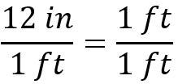

Introduction
Welcome! This website will provide basic tutorials on stoichiometric conversions. First, however, we'll need to talk about why any mathematical conversion (aka dimensional analysis) works.
All are One
Conversions are based on equivalence statements - statements which claim two or more things are equal to each other. For example, let's take this claim everyone in the US should be familiar with:
From grade school, we've been taught that there are 12 inches in 1 foot. But let's try something - let's divide both sides by 1 foot.
On the right-hand side of the equation, note that we now have 1 foot divided by 1 foot; any time a fraction has the same numerator and denominator, it's equal to 1!

Thus, "12 inches / 1 foot" is equal to 1. We'll get back to this later - for now, let's go back to our starting point.
Instead of dividing both sides by 1 foot, let's divide by 1 inch instead. This gives us the following:
Like above, we now have a fraction where the numerator and denominator are the same. This now turns into:
So now, 1 is equal to "1 foot divided by 12 inches". Buuuuuuuuuuuuuut... keep in mind that we said "12 inches / 1 foot" is equal to 1". This lets us say the following:
This may not hold any significance to you now, but we'll go through some practice problems illustrating why this is so important. To get a stronger grasp on how to apply conversion factors, try out the next section, Conversion Factors. Otherwise, feel free to move on to the next lesson, The Mole.
Alternatively, Sparknotes has a great website on how to perform conversion factors. It's formatting is pretty clear and, although it doesn't get into the mechanics of why conversion factors work, it gives a bunch of examples about how to use them. Additionally, it gets into more complicated stiochiometric conversions which we will not discuss (at this time!).